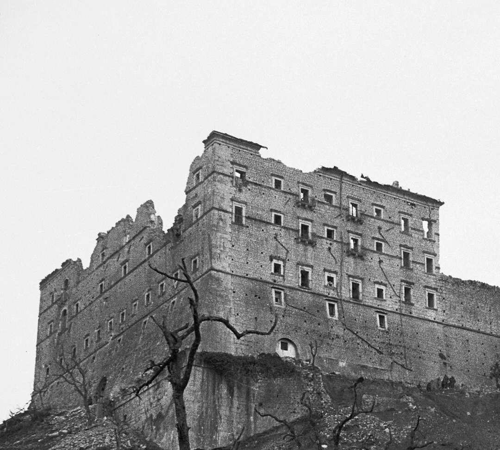
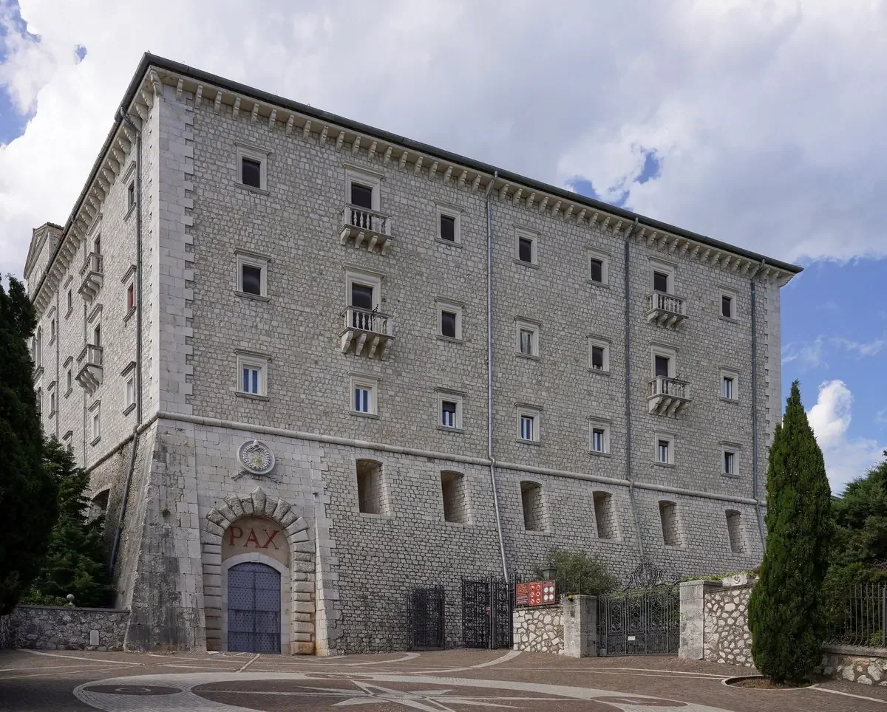
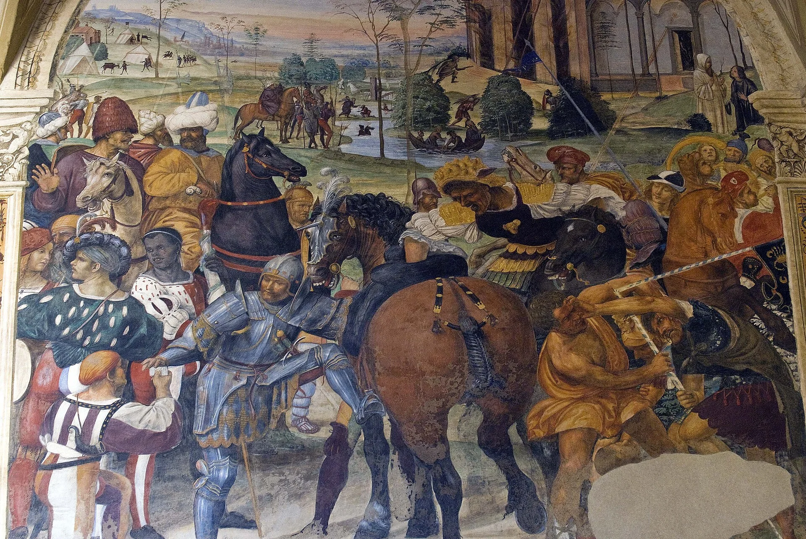
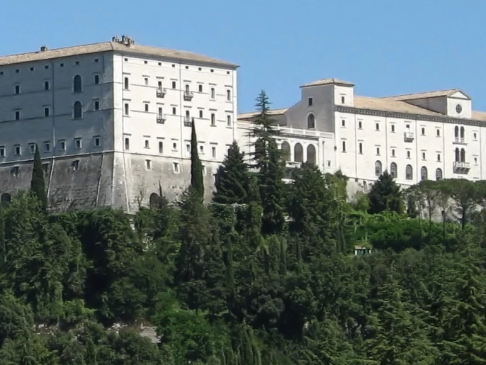
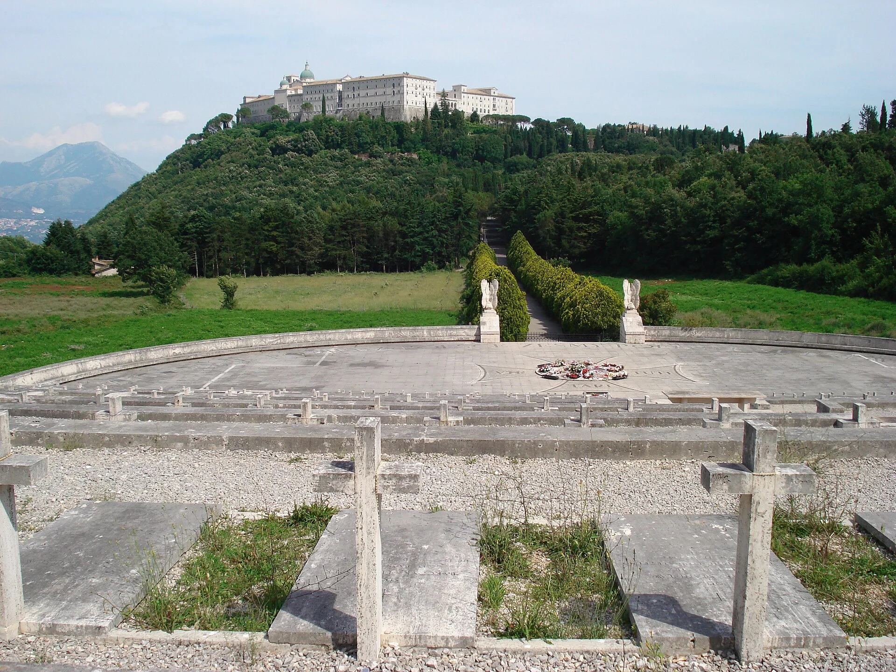
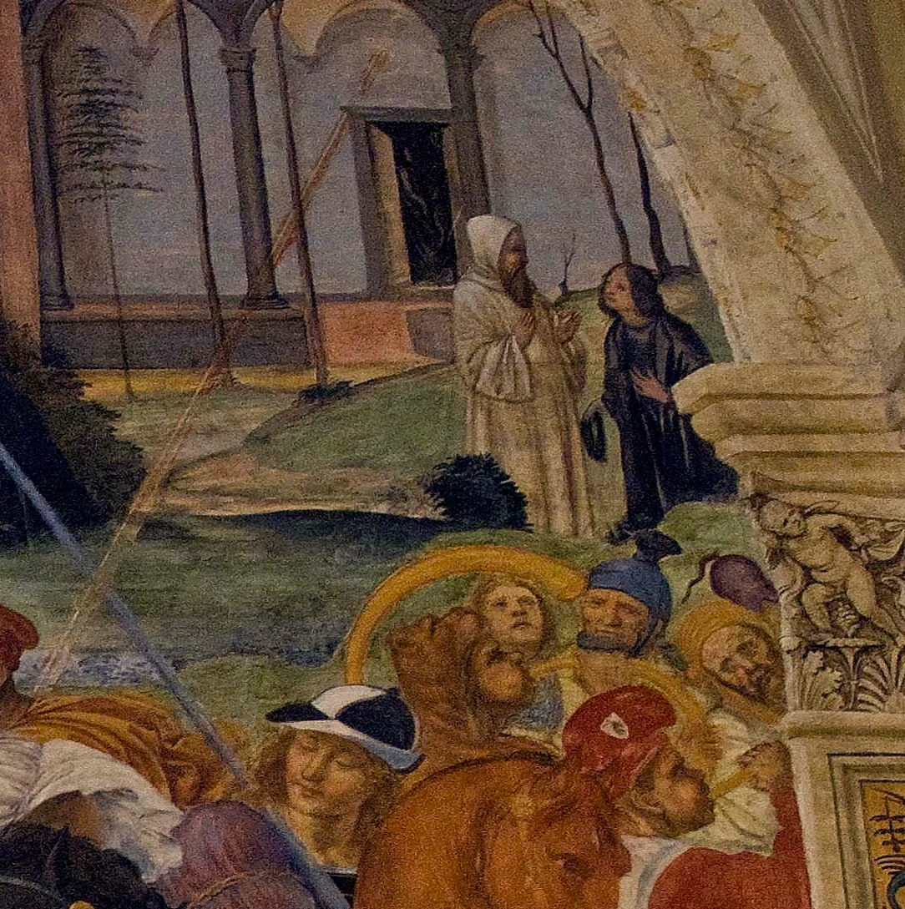
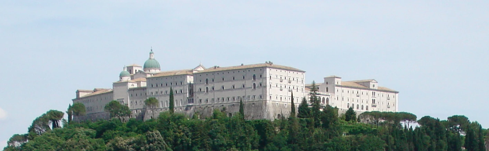

아직 펼치지 않은 카드기도하고 일하는 사람들 · 1몬테카시노 수도원1,500년 동안 네 번 무너지고, 그때마다 다시 일어선 수도원이 있어요. 마지막으로 무너진 것은 언제, 왜였을까요?산 위의 커다란 수도원이야. 여러 번 무너졌다가 다시 지었대.
529년 무렵 · 1964년이탈리아 카시노 · 산 위의 수도원
몬테카시노 수도원
1944년 5월, 산 위 수도원에는 무너진 벽과 창틀만 남아 있었어요. 20년 뒤 같은 자리에 같은 모습의 수도원이 다시 섰어요. 두 사진을 겹쳐, 무너진 모퉁이가 다시 일어선 모습을 직접 확인해 보세요.
산 위의 수도원이 전쟁 때 무너졌어. 그런데 수도사들이 돌을 하나하나 다시 쌓았대. 무너진 사진과 지금 사진을 겹쳐 볼까?
검수 전 시안이에요(기준서 1판). 6세기 이야기는 그레고리오 대교황의 『대화』와 파울루스 부제의 『랑고바르드족의 역사』를, 전쟁과 다시 짓기는 백과사전·1948년 기사·1964년 교황 강론을 따랐어요. 자료마다 다른 점은 따로 적었어요. 상상은 ‘눈 감고 상상해 보기’에만 썼어요.
시안 확인용카드 단계 미리 보기
1
산꼭대기의 옛 신전 자리
529년 무렵, 수도사 베네딕도는 수비아코(로마에서 60km쯤 떨어진 산골)를 떠나 카시노로 왔어요. 산비탈에는 옛 성채가 있었고, 산꼭대기에는 아폴로를 섬기던 오래된 신전과 숲이 남아 있었어요.
훗날 교황이 된 그레고리오 대교황은 『대화』라는 책에 이렇게 적었어요. 베네딕도가 우상을 부수고 제단을 엎고 숲을 태웠다고요. 그리고 성 마르티노 기도처(작은 예배당)를 짓고, 이교 제단이 있던 자리에는 세례자 요한 기도처를 지었대요.
그 뒤 1,500년 동안 이 산 위 수도원은 네 번 무너졌어요. 그리고 네 번 모두 같은 자리에 다시 섰어요.
베네딕도 성인이 산꼭대기 옛 신전 자리에 기도하는 집을 지었어. 그게 이 수도원의 시작이야.
물어보기산꼭대기에 집을 지으면 무엇이 보일까?
2
베네딕도의 눈물
어느 날 베네딕도와 가까운 귀족 테오프로부스가 그의 방에 들어갔다가, 베네딕도가 몹시 울고 있는 것을 보았어요. 평소 기도할 때 조용히 눈물을 흘리던 그였는데, 그날은 그치지 않았어요. 까닭을 묻자 베네딕도가 대답했어요.

“내가 세운 이 수도원과 형제들을 위해 마련한 모든 것이, 전능하신 하느님의 판단으로 이방 사람들에게 넘겨졌습니다. 이곳 사람들의 목숨만은 하느님께 빌어 겨우 얻어 냈습니다.”
그레고리오 대교황, 『대화』 2권 17장 · 1608년 영어 번역을 이 안내서가 옮김
그레고리오는 이 말이 이루어졌다고 적었어요. 6세기 끝 무렵, 랑고바르드족(북쪽에서 온 게르만족)이 수도사들이 잠든 밤에 쳐들어와 모든 것을 빼앗았어요. 그런데 한 사람도 붙잡지 못했대요.
수도사들은 로마로 피했고, 교황 펠라지오 2세가 라테라노 대성당 곁에 머물 곳을 내주었어요. 몬테카시노의 수도사였던 파울루스 부제(사제를 돕는 직분)는 8세기에 그 밤 수도사들이 무엇을 챙겨 떠났는지 기록해 두었어요.
6세기 끝 무렵 그 밤, 랑고바르드족을 피해 로마로 떠나는 수도사라면 무엇부터 챙길까요?
베네딕도 성인은 수도원이 무너질 걸 알고 울었대. 그래도 사람들의 목숨은 지켜 달라고 빌었어.
물어보기한밤중에 급히 떠나야 하면, 너는 무엇을 챙길 거야?
3
폐허에서 다시 선 수도원
1944년 겨울, 독일군은 로마로 가는 길목인 이 산에 방어선을 쳤고, 연합군은 그 길을 뚫으려 했어요. 1944년 2월 15일 아침, 연합군 폭격기들이 몇 시간 동안 수도원에 폭탄을 떨어뜨렸어요. 그 안에는 피란 온 사람들이 있었고, 많은 이가 목숨을 잃었어요. 원장과 수도사들은 지하 성당(크립타)에 숨어 살아남았고, 2월 17일 살아남은 피란민과 함께 수도원을 떠났어요.
아래 왼쪽 사진은 석 달 뒤인 5월 19일, 폴란드 군이 산꼭대기에 오른 다음 날 찍은 모습이에요. 손잡이를 밀어 오늘의 모습과 겹쳐 보세요.
가운데 손잡이를 밀어 1944년의 폐허와 오늘의 수도원을 겹쳐 보세요.


왼쪽 · 1944년 5월 19일, 폭격 석 달 뒤의 수도원(흑백 사진) · 사진: 맥콘빌 하사, 영국군 제2 영상·사진대 · 퍼블릭 도메인(영국 정부 저작물) · 위키미디어 공용
오른쪽 · 2007년 7월, 같은 쪽에서 본 오늘의 수도원(1944년 사진과 겹쳐 보려고 잘라 씀) · 사진: Ludmiła Pilecka · CC BY 3.0 · 위키미디어 공용
왼쪽의 높은 건물 모퉁이를 보세요. 1944년에는 지붕이 날아가고 창 구멍만 남았는데, 지금은 같은 자리에 같은 모양으로 서 있어요. 오른쪽 아치 창이 난 건물도 다시 섰어요. 두 사진은 같은 쪽에서 찍었지만 찍은 자리와 거리가 달라서, 꼭 맞게 겹치지는 않아요.
1948년, 미국 잡지 『타임』은 수도사 35명이 돌을 하나하나 손으로 다시 쌓고 있다고 전했어요. 원장 일데폰소 레아는 수도원의 라틴어 좌우명을 떠올렸어요. ‘숙치사 비레스치트(Succisa virescit)’, 잘려도 다시 돋는다는 뜻이에요.
수도원은 이탈리아 정부의 돈과 수도사들의 손으로 옛 모습 그대로 다시 지어졌어요. 1964년 10월 24일, 교황 바오로 6세가 새 성당을 봉헌(하느님께 바치는 예식)하며 말했어요. “폐허는 사라지고, 이 대성당의 거룩한 벽이 다시 일어섰습니다.”
전쟁 때 수도원이 폭탄에 무너졌어. 수도사들은 돌을 하나하나 다시 쌓아서, 옛날 모습 그대로 다시 지었어.
물어보기무너진 집을 다시 짓는다면, 맨 먼저 무엇을 세우고 싶어?
4
묘지에서 올려다본 수도원
수도원 아래 비탈에는 1944년 5월 이 산을 오르다 숨진 폴란드 군인들의 묘지가 있어요. 묘지 가운데 길을 따라 눈을 들면, 산꼭대기에 다시 선 흰 수도원이 보여요.

봉헌하던 날, 바오로 6세는 강론에서 “이 기적을 이룬 것은 평화”라고 말하고, 모든 전쟁이 끝나기를 빌었어요. 그날 그는 같은 산 위에서 베네딕도를 유럽의 수호성인(그 땅을 위해 빌어 주는 성인)으로 선포했어요.
봉헌을 마친 교황은 골짜기의 한 본당을 축복하고, 전쟁 묘지도 찾아갔어요.
수도원 아래에는 전쟁 때 숨진 군인들의 묘지가 있어. 교황님은 다시 지은 수도원에서 전쟁이 끝나기를 기도했어.
물어보기평화를 비는 마음을 한 낱말로 말한다면?
눈 감고 상상해 보기
1948년 여름, 산꼭대기는 먼지투성이예요. 돌끼리 부딪는 소리가 비탈에 울려요. 검은 옷의 수도사들이 무너진 벽에서 돌을 골라 한 줄씩 다시 쌓아요. 지하 성당에는 제비가 둥지를 틀었대요. 해가 지면 일손을 멈추고, 아직 지붕 없는 하늘 아래에서 저녁 기도를 바쳐요.
눈을 감아 봐. 산 위에서 돌 부딪는 소리가 들려. 수도사들이 돌을 하나, 또 하나 쌓아 올려. 지하 성당에서는 제비가 짹짹거려.
나의 자리
잘못된 판단이 남긴 폐허 위에서도 다시 지을 수 있을까요? 내가 다시 세우고 싶은 것은 무엇인가요?
무너진 것을 다시 쌓을 때 어떤 마음이 들어?
마음에 닿는 한 줄을 고르거나 직접 써 보세요. 한 줄을 남기면 이 자리의 도장이 찍혀요. 이 기기에만 저장돼요.
더 깊이
이야기를 보다 궁금해질 만한 것들이에요. 답을 읽거나 짧은 영화로 보세요.

규칙서가 뭐길래, 피란 가는 밤에 맨 먼저 챙겼을까요?

왜 꼭 같은 자리에, 옛 모습 그대로 다시 지었을까요?
뒷이야기
아직 펼치지 않은 이야기예요. 누르면 이야기가 펼쳐지고 색이 돌아와요. 더 알고 싶으면 근거를 따라가 보세요.
다 펼치면, 다음에 오실 때 새 이야기가 찾아와요.
오늘의 뒷이야기는 여기까지예요. 다음에 오시면 새 이야기가 기다리고 있어요.
펼친 뒷이야기 · 누르면 다시 볼 수 있어요
더 찾아보기
기록마다 다른 점
네 번이 언제였나 이 카드는 랑고바르드족, 사라센, 1349년 지진, 1944년 폭격을 네 번으로 셌어요. 1948년 『타임』 기사는 1944년 앞의 네 번을 랑고바르드족(580년), 사라센(884년), 지진(1349년), 프랑스군(1799년)으로 적었어요. 베네딕도회 누리집에 옮겨 실린 백과사전 글은 1046년 노르만족까지 넣어요.
랑고바르드족이 온 해 앞면은 570년 무렵, 『가톨릭 백과사전』(1911)은 580년, 『새 가톨릭 백과사전』은 581년 무렵이라고 해요. 파울루스 부제 책의 영어 번역(1907) 주석은 589년이라고 하고, 582년으로 보는 학자도 있다고 적어요.
사라센이 온 해 『새 가톨릭 백과사전』과 앞면은 883년, 『가톨릭 백과사전』과 『샤프-헤르초크 종교 백과사전』은 884년이에요.
폭격으로 숨진 사람 앞면은 약 230명이라고 하고, 전쟁사 누리집 History of War는 280~300명이라고 해요. 그날 수도원 안에 피란민이 몇 명 있었는지도 기록마다 달라요.
더 찾아보기
베네딕도의 예언과 수도원의 처음 이야기는 그레고리오 대교황의 『대화』 2권에, 1964년 봉헌 날의 말은 교황청 누리집에 남아 있어요.
다시 선 모퉁이 금박
1944년 폐허와 오늘 사진을 손잡이로 양쪽 끝까지 겹쳐 보면 금박이 입혀져요.
1944년과 오늘을 양쪽 끝까지 겹쳐 보기
그 밤의 짐 채색
둘 가운데 하나만 해도 카드가 채색돼요.
피란 가는 수도사의 자리에서 챙길 것 고르기
아이와 함께 ‘영화처럼 보기’를 끝까지 보기
근거 보기 (29)
- 『가톨릭 백과사전』(1911) 「몬테카시노」 — 529년 무렵 수비아코에서 옴, 산꼭대기 아폴로 신전, 세례자 요한 성당과 성 마르티노 기도처, 580년 랑고바르드족, 로마로 피함, 펠라지오 2세가 라테라노 곁에 머물게 함, 718년 페트로낙스, 884년 사라센·베르타리우스·테아노, 테아노의 불에 규칙서 원본이 탐, 949년 알리게르누스
- 그레고리오 대교황 『대화』 2권 8장(1608년 영어 번역, CCEL) — 카시노 성채, 산꼭대기 아폴로 신전과 숲, 우상을 부수고 제단을 엎고 숲을 태움, 성 마르티노 기도처, 제단 자리에 성 요한 기도처
- 그레고리오 대교황 『대화』 2권 17장(CCEL) — 테오프로부스, 몹시 우는 베네딕도, 수도원이 이방인에게 넘겨짐, 목숨만은 겨우 얻어 냄, 밤에 쳐들어온 랑고바르드족, 한 사람도 붙잡지 못함
- 파울루스 부제 『랑고바르드족의 역사』 4권 17장(풀크 영어 번역, 1906) — 밤에 쳐들어옴, 로마로 피함, 규칙서 원본·몇몇 글·빵 1파운드·포도주 한 되·살림살이를 챙김, 주석: 589년(582년이라는 학자도 있음)
- 『샤프-헤르초크 종교 백과사전』 「몬테카시노」(CCEL) — 589년 랑고바르드족, 라테라노 곁에서 거의 150년, 페트로낙스, 748년 자카리아가 규칙서 원본을 돌려보냈다고 전함, 884년 사라센, 테아노에서 30년 뒤 카푸아
- 『새 가톨릭 백과사전』 「몬테카시노 대수도원」(encyclopedia.com) — 581년 무렵, 883년, 1349년 9월 9일 지진, 1944년 2월 15일 폭격, 이탈리아 정부의 돈과 원장 일데폰소 레아가 이끈 수도회가 옛 모습대로 다시 지음, 1964년 10월 24일 봉헌·유럽 수호성인, 1951년 세례자 요한 성당·1953년 성 마르티노 성당 다시 발견
- History of War, 「제2차 카시노 전투」 — 1944년 2월 15일 오전 9시 45분부터 폭격, 피란민 280~300명 사망, 원장과 대부분의 수도사는 지하 성당에서 살아남음, 2월 17일 원장과 피란민이 떠남, 폭격 전 수도원 안에 독일군이 있었다는 증거 없음
- 『타임』(1948년 9월 6일), 「이탈리아: 잘려도 다시 돋는다」 — 원장 일데폰소 레아, 좌우명 succisa virescit, 수도사 35명이 손으로 돌을 쌓음, 무너지지 않은 10%에서 지냄, 1944년 5월 18일 안데르스 장군의 폴란드 군, 지하 성당 제단 위 제비 둥지
- 바오로 6세, 몬테카시노 성당 봉헌 강론(1964년 10월 24일, 교황청) — “폐허는 사라지고 … 거룩한 벽이 다시 일어섰다”, “이 기적을 이룬 것은 평화”, 베네딕도를 유럽의 수호자로 선포
- 베네딕도회 수석 아빠스 예레미아스 슈뢰더의 2024년 10월 24일 연설(osb.org) — 바오로 6세가 성당을 봉헌하고, 골짜기의 본당을 축복하고, 전쟁 묘지를 찾아감, “모든 전쟁의 끝”
- 위키미디어 공용 파일 설명(API로 확인): 1944년 5월 19일 폐허 사진 — 영국군 제2 영상·사진대 맥콘빌 하사, 폴란드 제2군단이 차지한 다음 날, 영국 정부 저작물(퍼블릭 도메인)
- 위키미디어 공용 파일 설명(API로 확인): 소도마의 몬테 올리베토 마조레 「성 베네딕도 이야기」 벽화 가운데 「베네딕도가 몬테카시노의 파괴를 예언하다」
- 그레고리오 대교황 『대화』 2권 머리말 · 1장 · 33 · 34 · 37장(CCEL) — 네 제자에게 들음, 로마에서 40마일 떨어진 수비아코, 누이 스콜라스티카와 비바람, 한 무덤, 아폴로 제단 자리에 지은 세례자 요한 기도처의 무덤
- 옥스퍼드 대학 ‘성인 숭배’ 자료: 그레고리오의 『대화』(개요) — 그레고리오는 590~604년 교황, 593년 무렵 로마에서 씀, 베네딕도는 547년 죽음
- 베네딕도 규칙서 머리말 · 20 · 39 · 40장(CCEL) — 평화를 찾아 따르라(시편 34편), 기도와 눈물, 빵 하루 1파운드, 포도주 하루 헤미나 하나
- 『가톨릭 백과사전』(1911) 「베네딕도 규칙」 — 73장, 581년 로마로 가져간 규칙서, 8세기 중엽 자카리아, 샤를마뉴의 본보기 베낌, 896년 불
- Britannica: Paul the Deacon — 프리울리의 귀족 집안, 랑고바르드 왕국이 무너진 뒤 몬테카시노에서 역사를 씀
- 미 육군 군사사 연구소 「로마-아르노」(클레이턴 로리) — 리리 골짜기 입구를 막은 몬테카시노, 구스타프 방어선
- AGI(이탈리아 통신) 「몬테카시노의 묵시록」(마르코 파트리첼리, 2024) — ‘이탈리아 친구들에게’ 전단, 아빠스(Abt)와 부대(Abteilung)를 헷갈린 번역, 젱어 장군
- 해프굿·리처드슨 『몬테카시노』(1984) 서평 — 엿들은 무전 “Ist Abt noch im Kloster?”
- 폴란드 역사 박물관(구글 아트 앤 컬처) 「안데르스 장군, 어려운 선택들」 — 루뱐카, 1941년 풀려남, 11만 6천여 명의 탈출과 이란, 제2군단, 국적 박탈, 1970년 몬테카시노
- 폴란드 역사 누리집(polishhistory.pl) · 이탈리아 관광청(italia.it) — 폴란드 군인 묘지의 비르투티 밀리타리 십자가와 글, PAX 제단, 1945년 9월 1일 봉헌, 다윗의 별 18
- 세인트 마인라드 대수도원 「베네딕도회의 평화」(2022) — 정문 위의 PAX, 들어오는 이에게 평화를
- 베네딕도회 누리집(옛 판) 「몬테카시노」 · 교황 베네딕토 16세 강론(2009) — 밑동의 새순 문장과 좌우명, 오래된 참나무
- 카시노 대학 무제오 파칠레 · MeMo — 있던 자리에 있던 모습대로(1945~1956), 미리 옮긴 문서고와 도서관, 1943년의 상자, 1955년 귀환
- The Past(『커런트 월드 아키올로지』 123호, 리처드 호지스, 2024) — 폐허가 처음 모습을 찾을 기회가 됨, 수도사이자 고고학자 판토니
- 포덤 대학 중세 자료집 · 샤프 백과사전 · OSB 시카고 기록 보관소 — 플뢰리로 옮겼다는 이야기와 오랜 다툼, 1950년 소식지
- 이탈리아 미술 협회 · 교황청 톨로메이 약전 — 소도마의 몬테 올리베토 마조레 벽화(1505년 무렵부터 3년), 흰 수도복
- 『치오차리아의 수도원들』(카시노 대학, 2015) — 시인 마르코가 노래한 까마귀 세 마리
그림·사진·소리 출처
- 그림: 소도마 · 퍼블릭 도메인 · 위키미디어 공용
- 사진: 맥콘빌 하사, 영국군 제2 영상·사진대 · 퍼블릭 도메인(영국 정부 저작물) · 위키미디어 공용
- 사진: Ludmiła Pilecka · CC BY 3.0 · 위키미디어 공용
- 사진: Adrian104 · 퍼블릭 도메인 · 위키미디어 공용
- 그림: 소도마 · 퍼블릭 도메인 · 위키미디어 공용
- 그림: 소도마 · 퍼블릭 도메인 · 위키미디어 공용
- 그림: 소도마 · 퍼블릭 도메인 · 위키미디어 공용
- 그림: 소도마 · 퍼블릭 도메인 · 위키미디어 공용
- 사진: Adrian104 · 퍼블릭 도메인 · 위키미디어 공용
- 사진: Adrian104 · 퍼블릭 도메인 · 위키미디어 공용
- 사진: Adrian104 · 퍼블릭 도메인 · 위키미디어 공용
- 사진: 맥콘빌 하사, 영국군 제2 영상·사진대 · 퍼블릭 도메인(영국 정부 저작물) · 위키미디어 공용
- 사진: 맥콘빌 하사, 영국군 제2 영상·사진대 · 퍼블릭 도메인(영국 정부 저작물) · 위키미디어 공용
- 사진: Monticiano · CC BY-SA 4.0 · 위키미디어 공용
‘처음 만나는 기독교 문화’의 깊은 카드예요. 카드 단계와 남긴 글은 이 기기에만 저장돼요.